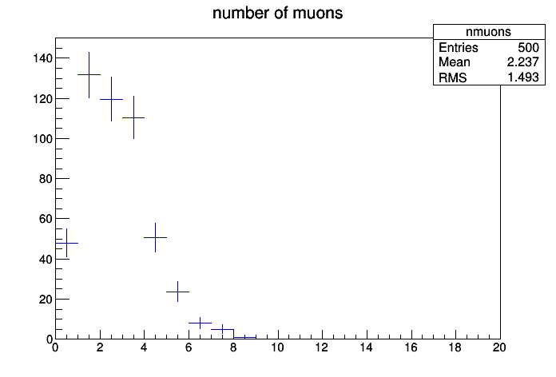

Quickana-tutorial-results
results from automated travis builds
View the Analysis Code Repository on GitHub lukasheinrich/quickana-tutorial
Docker Image:
Build Status:

quickana-tutorial-results
This pages shows the automatically generated results coming from analysis code running on Travis CI. The analysis code is a QuickAna/EventLoop based analysis with the code stored in the quickana-tutorial repository.
These are the contents of the /results directory
.. and via ROOTJS directly from file (try hovering over the plot or right-clicking to zoom etc )